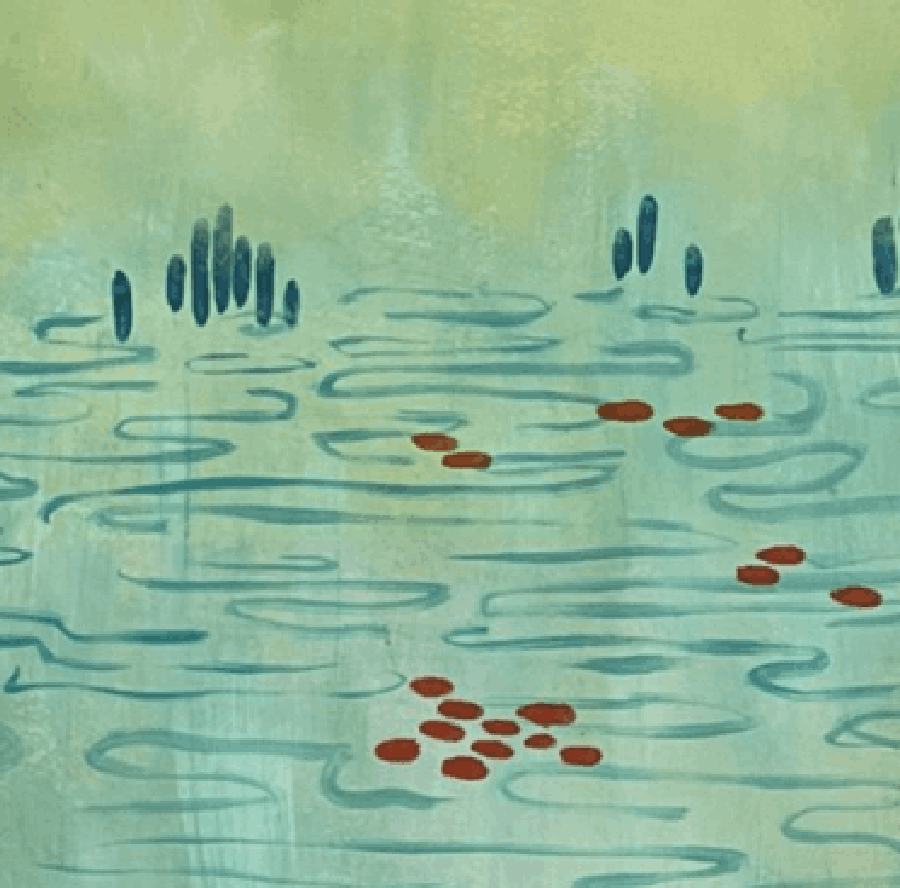
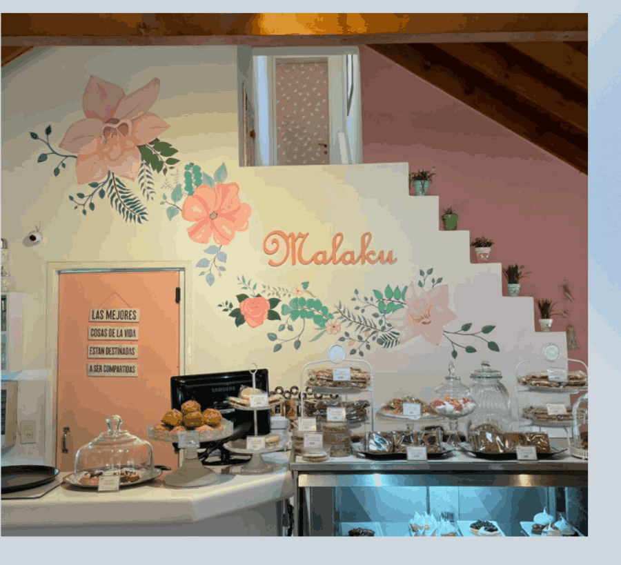

Katharina Armbruster
Artista visual de Zona Sur, Buenos Aires. Finalizando la Licenciatura en Artes Visuales con orientación en pintura (UNA), con formación en dibujo, pintura, cerámica, escultura, grabado y arte impreso. Expuso su obra textil Mujeres en Espacio Barbuda (CABA, 2026) y participó de la Clínica de Obra facilitada por Marina De Caro. Actualmente trabaja freelance en murales, ilustración y venta personalizada.
«Superficies de superposición y velamiento donde la imagen aparece en un estado inestable, entre la presencia y la ausencia.»

Obra
La práctica se articula en torno a la exploración de la intimidad, la memoria y la ambigüedad como territorios sensibles de percepción. A través de capas, transparencias y materialidades diversas, el trabajo construye superficies de superposición y velamiento donde la imagen aparece en un estado inestable, entre la presencia y la ausencia. Mi obra propone una aproximación atmosférica y afectiva, en la que los rastros, las huellas y las tensiones entre lo visible y lo oculto activan lecturas abiertas y fragmentarias de la experiencia.


Mural

Murales pintados a mano que dialogan con el espacio y la estética de cada lugar. Diseño, boceto y pintura in situ, de la pared completa al muro con relieve.


Modalidades
Proceso
Branding
Diseño de marca — casosIdentidades visuales construidas junto a cada marca: del concepto al sistema — wordmark, papelería, dirección de arte y aplicaciones. [placeholder — texto final con Kati]
Reducir la marca a su gesto mínimo — una grotesca decidida y el blanco y negro — para que la ropa y la fotografía pongan el resto. [placeholder]
Una identidad orgánica y serena, apoyada en verdes profundos y texturas naturales, que traduce la formulación consciente de la marca en cada superficie. [placeholder]
¿Tu marca necesita una identidad?
CONTACTO Y ENCARGOS →